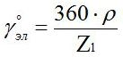
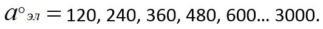
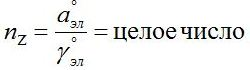
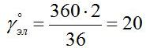
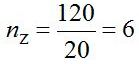
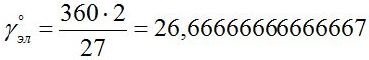
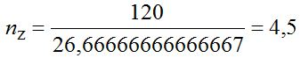
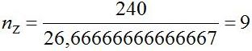
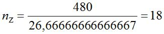

Перейти на главную страницу справочника.
Выбор начал фаз в обмотке.
- После завершения составления схемы укладки переходим к выбору начал фаз в обмотке.
Выбор начал фаз в трёхфазной обмотке.
- Очень важный этап при расчете обмотки электродвигателя. Если обмотчик ошибётся при выборе начал фаз в обмотке, получится воющая обмотка с плохим запуском, или двигатель вообще не запустится.
- Электрический угол между двумя соседними пазами, где Z1 - общее количество пазов статора, p=2p/2.

- Электрический сдвиг в трехфазных обмотках между началами фаз.

- Число пазов между началами соседних фаз.

Поясню как пользоваться этой формулой: электрический сдвиг между началами фаз при первом расчете выбирайте 120, если получилось не целое число производим пересчет выбрав электрический сдвиг между началами фаз 240, 360, 480 и т.д. Если при всех расчетах целого числа не получается, то обмотка считается несимметричной и использовать её нежелательно.
Выбор начал фаз в трёхфазной обмотке с количеством пазов Z1=36, 1500 оборотов в минуту 2p=4.
- Электрический угол между двумя соседними пазами.

Число пазов между началами соседних фаз.
Проверяем расчет по рисунку №1. Цветовая маркировка фаз: фаза А - желтый цвет, фаза В - зеленый цвет, фаза С - красный цвет. Начало первой фазы А с обозначением вывода C1 находится в первом пазу: C1=1. Для нахождения начала второй фазы В с обозначением вывода C2 к первому пазу прибавляем полученное по формуле число пазов между началами соседних фаз: 1+6=7. Получилось C2=7. Проверяем расчет по рисунку №1, в седьмом пазу начало катушки №2 зеленого цвета. Для нахождения начала третьей фазы С с обозначением вывода C3 к седьмому пазу прибавляем полученное по формуле число пазов между началами соседних фаз: 7+6=13. Проверяем расчет по рисунку №1, в тринадцатом пазу начало катушки №3 красного цвета. Получилось: C1 - паз №1, C2 - паз №7, C3 - паз №13. После завершения выбора начал фаз в трёхфазной обмотке переходите к составлению схемы соединений катушек в обмотке электродвигателя.
Рис. 1
Выбор начал фаз в трехфазной обмотке с количеством пазов Z1=27, 1500 оборотов в минуту 2p=4.
- Электрический угол между двумя соседними пазами.

- Число пазов между началами соседних фаз.

- Так как получилось не целое число, производим пересчет выбрав электрический сдвиг между началами фаз 240.

- Проверяем расчет по рисунку №2. Цветовая маркировка фаз: фаза А - желтый цвет, фаза В - зеленый цвет, фаза С - красный цвет. Начало первой фазы А с обозначением вывода C1 находится в первом пазу: C1=1. Для нахождения начала второй фазы В с обозначением вывода C2 к первому пазу прибавляем полученное по формуле число пазов между началами соседних фаз: 1+9=10. Получилось C2=10. Проверяем расчет по рисунку №2, в десятом пазу начало катушки №5 красного цвета принадлежащей фазе С. Неправильно, придется выполнить расчет снова.
- Производим пересчет выбрав электрический сдвиг между началами фаз 480.

- Проверяем расчет по рисунку №2. Начало первой фазы А с обозначением вывода C1 находится в первом пазу: C1=1. Для нахождения начала второй фазы В с обозначением вывода C2 к первому пазу прибавляем полученное по формуле число пазов между началами соседних фаз: 1+18=19. Получилось C2=19. Проверяем расчет по рисунку №2, в девятнадцатом пазу начало катушки №9 зелёного цвета принадлежащей фазе В. Для нахождения начала третьей фазы С с обозначением вывода C3 к девятнадцатому пазу прибавляем полученное по формуле число пазов между началами соседних фаз: 19+18=37. Проверяем расчет по рисунку №2, так как пазов в статоре 27, после паза 27 продолжаем считать пазы с первого паза, или 37-27=10, в десятом пазу начало катушки №5 красного цвета принадлежащей фазе С. Получилось: C1 - паз №1, C2 - паз №19, C3 - паз №10. После завершения выбора начал фаз в трехфазной обмотке переходите к составлению схемы соединений катушек в обмотке электродвигателя.
Рис. 2
Выбор начал фаз в однофазной обмотке.
- Для однофазных обмоток выбор начал рабочей А1 и пусковой В1 обмоток выбирайте из полюса №1. После завершения выбора начал фаз переходите к составлению схемы соединений катушек в обмотке электродвигателя.
17.12.2011 г.
Литература по данной теме:
Мещеряков В.В., Ченцов И.М. "Пересчет электрических машин и таблицы обмоточных данных" 1950 г.